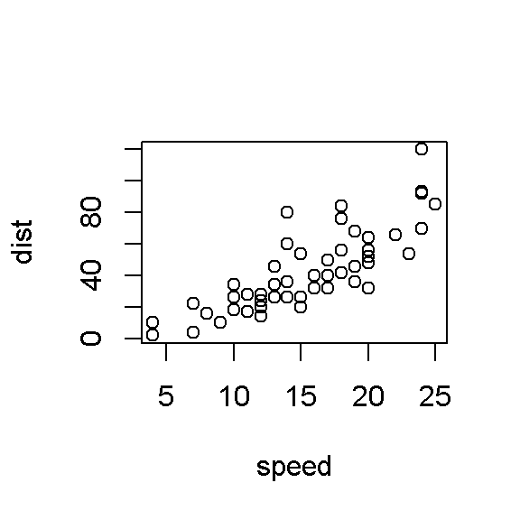

Chapter 7 Introducción a Rmarkdown
En esta sesión vamos a aprender a crear un documento markdown. Este es un formato para escribir reportes reproducibles y dinámicos en R. Usted puede exportar un markdown como PDF, HTML O Word, en donde puede incluir código de R y resultados como gráficas o texto.
La sintaxis de Markdown es igual a la usada en latex, un software en el cual se procesa texto. Por esto, antes de empezar, debemos instalar el paquete “tinytex.”
R Markdown cuenta con una sintaxis para escribir texto plano o código. Comenzando por el texto plano, vamos a revisar los distintos formatos de texto:
7.0.1 Sintaxis de texto plano:
Para seleccionar un título de primer nivel
Título 1: #
Título 2: ##
Título 3: ###
Título 4: ####
Texto en itálica o Texto en itálica
Texto en negrilla o Texto en negrilla
Equaciones: \(A = \pi*r^{2}\)
Cita en bloque
| Título de la tabla | Segundo título |
|---|---|
| Celda 1 | Celda 2 |
| Celda 3 | Celda 4 |
- Lista
- Sub item de lista
- Lista numérica
- Sub item de la lista
Separador:
7.0.2 Sintaxis de código:
Para incluir código en Markdown, debemos incluirlo dentro de la siguiente estructura denominada “chunk”:
1+2## [1] 3Podemos nombrar un chunk y ajustar la forma en la que se muestran los resultados mediante distintos argumentos definidos con el operado lógico TRUE o FALSE:
7.0.2.0.0.1 Nota: dos chunks no pueden tener el mismo nombre
- echo: Nos permite decidir si el código debe ser mostrado en el documento
## [1] 22- eval: Nos da la opción si ejecutar el código y mostrar su resultado o no
5/2- warning: Controla los mensajes de warning que pueden resultar al ejecutar el código
warning("Este es un mensaje de waning") ## Warning: Este es un mensaje de waning- error: Controla los mensajes de errores que pueden resultar al ejecutar el código
2*!## Error: <text>:2:0: unexpected end of input
## 1: 2*!
## ^Podemos realizar gráficas y configurar el tamaño mostrado en el documento final:
plot(cars)
Es posible ajustar mas de una gráfica a la vez:

7.0.2.0.0.2 Mayor información sobre la configuración de chunks
Finalmente, para generar nuestro documento, debemos usar el botón Knit que se encuentra en la partde superior de R. Allí escogeremos el documento de salida.